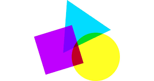
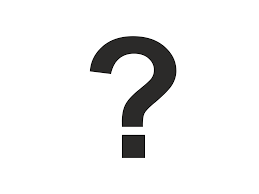
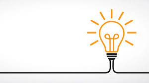

Geometri er et gøyt tema innenfor matematikk. Man har ofte en viss form for visualisering for oppgaver, som gjør de mer spennende å løses.

Matte kan være krevende, som er gøyt og god hjernetrim

Matte er nyttig. Det har mange bruks områder og er grunnmuren for mye av teknologien som omgår oss. Også nyttig for andre skole fag.